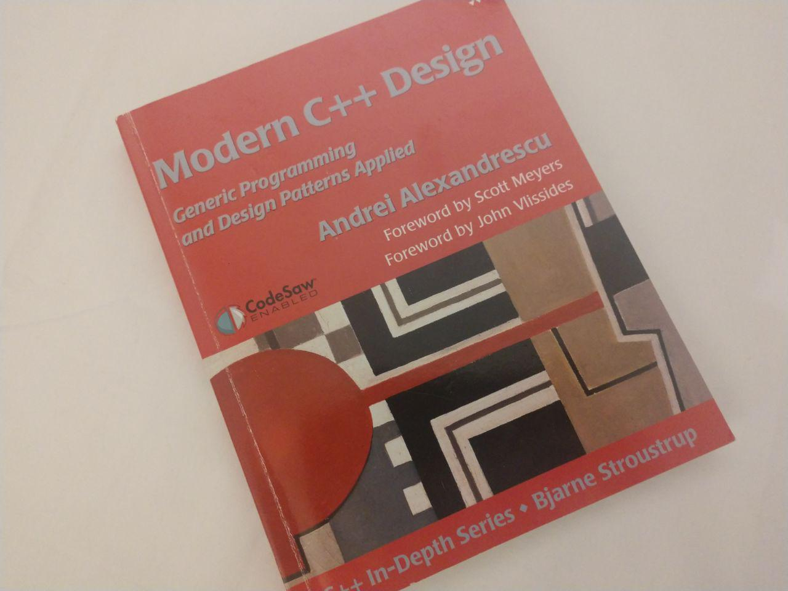
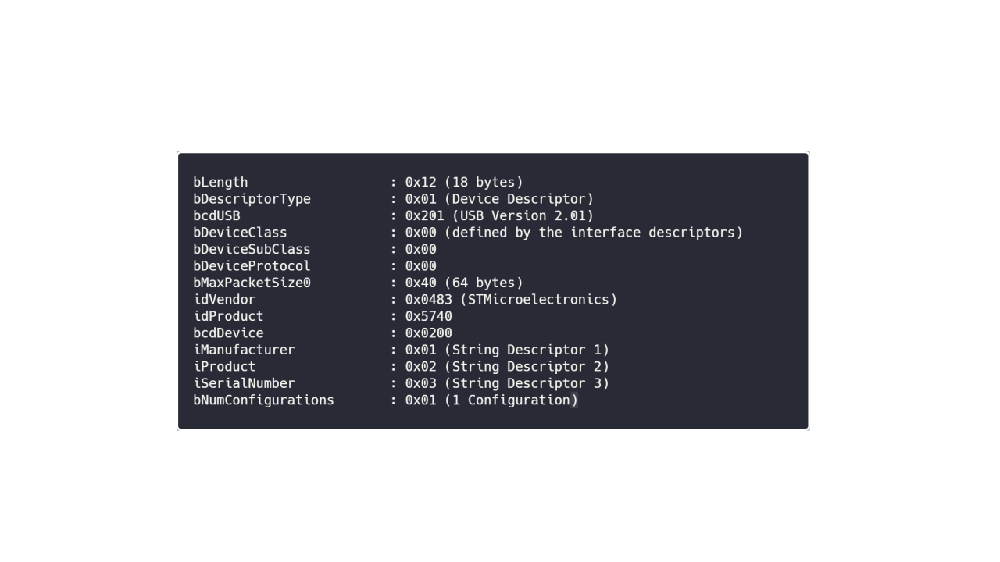
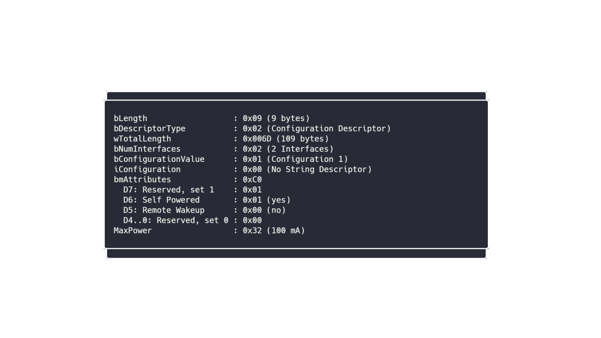
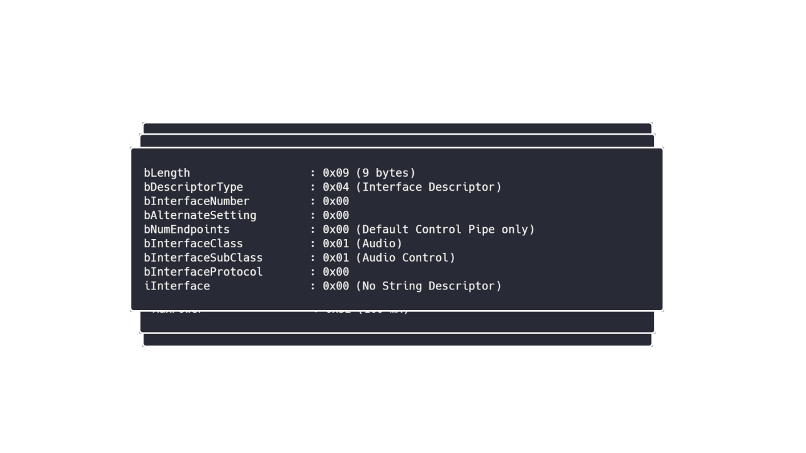
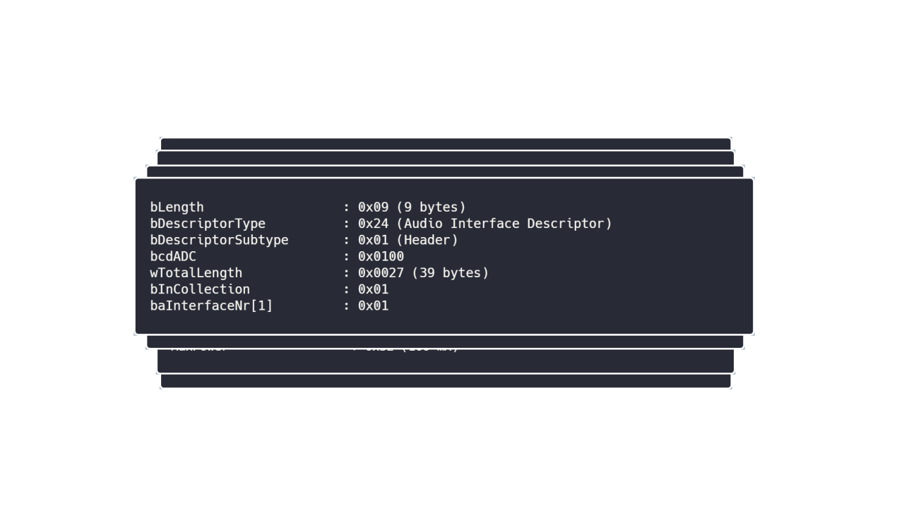
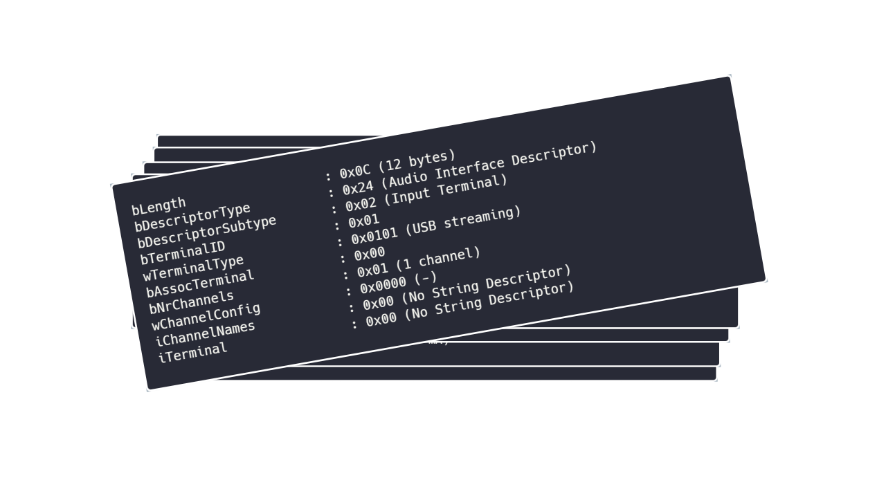
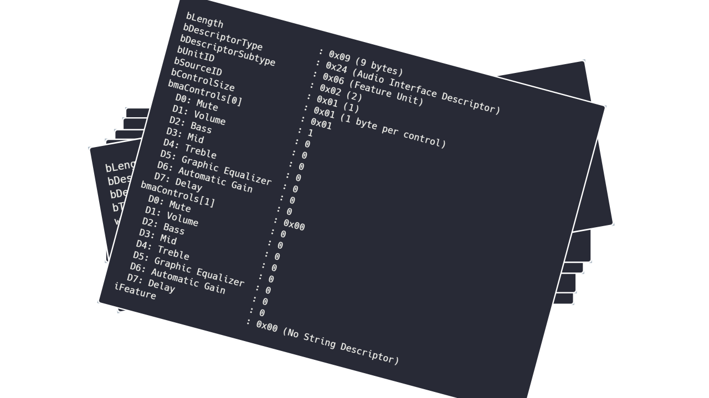

What can
be done?
Introduction
-
Why?
helped me, maybe helps others -
For Who?
Mostly Beginners -
What?
C++ on Bare Metal & some CMake
my work
Disclaimer
- Ideas are no army swiss knife
- specific solutions of my worklife
- therefore tools of this time & knowledge
easy, obvious start
optimize your variables & functions
easiest way? const!
Why const?
- more readable Code
- helps compiler to optimize (smaller/ faster)
- prevents bugs
-
feature exists since "forever"
(no Excuse for not using it 😉)
more readable/less potential bugs
void super_serious_function(const int & input_value) {
// input_value++; // can't be changed
// [...] big magic happens here [...]
std::cout << input_value;
// [...] more unicorn code [...]
}GODBOLT
helping the compiler
const std::array values = {1,2,3,4,5,6,7,8,9,10,12,13,14,15};
int main() {
std::cout << values[4];
return 0;
}GODBOLT
Hint: std::array deduction since C++17
More detailed Talks
-
CppCon 2018: Kate Gregory
- Simplicity: Not Just For Beginners
Highlight: Const all the things [47:38 - 51:22] -
CppCon 2016: Jason Turner
- Rich Code for Tiny Computers: A Simple Commodore 64 Game in C++17
Highlight: "add const" [26:56 - 28:23]
Better Optimization?
- constexpr!
- Variable evaluation at compiletime
-
Function evaluation at compiletime
IF POSSIBLE - since C++11 for variables and 1 line Functions
-
since C++14 for functions with more lines
often possible to add "constexpr" to function
More detailed Talks
One Step further?
- consteval!
- Function MUST evaluate at compile
- only for functions!
- "added" in C++20
- gives guarantees for our code
summary
Configurations
- Save Configurations in Files
- "One File for all" or "One File per Configuration"?
- it depends! For me:
- One File for all:
if Configurations are small - One File per Configuration:
if Configurations are long
Where could it be used?
- Device-Address (I2C, IP[static or dynamic?])
- Server-Address (Gateway? static IP?)
- Devboard, Prototype, Final HW-Revision? (LED-Pins?)
- Branding?
- Watchdogtimer?
Example
struct first {
constexpr static int device_ram_size = 1; };
struct middle {
constexpr static int device_ram_size = 21; };
struct last {
constexpr static int device_ram_size = 42; };
int main() {
using this_config = last;
std::cout << this_config::device_ram_size ;
return 0;
};Example
struct first {
using connection = GW_t; };
struct last {
using connection = IP_t<192,168,0,8>; };Story of a Sensor
- Connection
- Different Hardware
- Easy added User
Example CMAKE
SET( Environment_configs "first" "last" "middle")
# for each device/config-version create own target
foreach( current_Environment ${Environment_configs} )
# create this specific target
add_executable(Example_${current_Environment}.elf
main.cpp)
# every target gets own definevalue
target_compile_definitions(Example_${current_Environment}.elf
PUBLIC CONFIG_DEFINE=${current_Environment})
endforeach()And why all this?

Policy Based Class Design
Policy Based Class Design
- Book from 2001 (18 years!)
- Implementations of Behaviour/Values
- changed C++ (std::container accept allocators!)
- very good for combining behaviours!
- combining through misusing of typesystem/templates (TMP!)
Where useful?
- reading ADC? write a function/helperclass!
- What ADC? ADC 0, 1 or 2? (specific SFRs!)
- how do we copy Data? Interruptroutine or DMA?
- what resolution? Signed or unsigned?
and that without HW-Context 😱
- Do we even have 3 ADCs?
- What type of ADC? SFRs can be different
- you get it...
-
I forgot
3 ADCs, 2 Copys, 3 Resolutions, 2 signed/unsigned, 3 ICs
= 108 possibilities
Why should we use policies?
- slogan: divide and conquer
-
simplifies complexity
similar to playing with brickstones - better encapsulation of functions
- generic programming = easier reusing
todays Talk?
-
Meeting Embedded 2019: Daniel Penning
- Generic programming for the masses
lets close the circle!
Why?
- nice, but simple
- we talked about ...
- ... compiletime-evaluation
- ... configurations, known at compiletime
- ... compiletime-combination of Behaviour-implementation
- Could we evaluate our complete Firmware at compiletime?
- Could we do more?
USB Descriptors
USB Descriptors
USB Descriptors
USB Descriptors
USB Descriptors
USB Descriptors
USB Descriptors
USB Descriptors
USB Descriptors

USB Descriptors

really really bad....
0x09, /* bLength: Configuation Descriptor size */
USB_DESC_TYPE_OTHER_SPEED_CONFIGURATION,
USB_CDC_CONFIG_DESC_SIZ,
0x00,
0x02, /* bNumInterfaces: 2 interfaces */
0x01, /* bConfigurationValue: */
0x04, /* iConfiguration: */
0xC0, /* bmAttributes: */
0x32, /* MaxPower 100 mA */
/*Interface Descriptor */
0x09, /* bLength: Interface Descriptor size */
USB_DESC_TYPE_INTERFACE, /* bDescriptorType: Interface */
/* Interface descriptor type */
0x00, /* bInterfaceNumber: Number of Interface */
0x00, /* bAlternateSetting: Alternate setting */
0x01, /* bNumEndpoints: One endpoints used */
0x02, /* bInterfaceClass: Communication Interface Class */
0x02, /* bInterfaceSubClass: Abstract Control Model */
0x01, /* bInterfaceProtocol: Common AT commands */
0x00, /* iInterface: */
/*Header Functional Descriptor*/
0x05, /* bLength: Endpoint Descriptor size */
0x24, /* bDescriptorType: CS_INTERFACE */
0x00, /* bDescriptorSubtype: Header Func Desc */
0x10, /* bcdCDC: spec release number */
0x01,
/*Call Management Functional Descriptor*/
0x05, /* bFunctionLength */
0x24, /* bDescriptorType: CS_INTERFACE */
0x01, /* bDescriptorSubtype: Call Management Func Desc */
0x00, /* bmCapabilities: D0+D1 */
0x01, /* bDataInterface: 1 */
/*ACM Functional Descriptor*/
0x04, /* bFunctionLength */
0x24, /* bDescriptorType: CS_INTERFACE */
0x02, /* bDescriptorSubtype: Abstract Control Management desc */
0x02, /* bmCapabilities */
/*Union Functional Descriptor*/
0x05, /* bFunctionLength */
0x24, /* bDescriptorType: CS_INTERFACE */
0x06, /* bDescriptorSubtype: Union func desc */
0x00, /* bMasterInterface: Communication class interface */
0x01, /* bSlaveInterface0: Data Class Interface */
/*Endpoint 2 Descriptor*/
0x07, /* bLength: Endpoint Descriptor size */
USB_DESC_TYPE_ENDPOINT , /* bDescriptorType: Endpoint */
CDC_CMD_EP, /* bEndpointAddress */
0x03, /* bmAttributes: Interrupt */
LOBYTE(CDC_CMD_PACKET_SIZE), /* wMaxPacketSize: */
HIBYTE(CDC_CMD_PACKET_SIZE),
0xFF, /* bInterval: */
/*---------------------------------------------------------------------------*/
/*Data class interface descriptor*/
0x09, /* bLength: Endpoint Descriptor size */
USB_DESC_TYPE_INTERFACE, /* bDescriptorType: */
0x01, /* bInterfaceNumber: Number of Interface */
0x00, /* bAlternateSetting: Alternate setting */
0x02, /* bNumEndpoints: Two endpoints used */
0x0A, /* bInterfaceClass: CDC */
0x00, /* bInterfaceSubClass: */
0x00, /* bInterfaceProtocol: */
0x00, /* iInterface: */
/*Endpoint OUT Descriptor*/
0x07, /* bLength: Endpoint Descriptor size */
USB_DESC_TYPE_ENDPOINT, /* bDescriptorType: Endpoint */
CDC_OUT_EP, /* bEndpointAddress */
0x02, /* bmAttributes: Bulk */
0x40, /* wMaxPacketSize: */
0x00,
0x00, /* bInterval: ignore for Bulk transfer */
/*Endpoint IN Descriptor*/
0x07, /* bLength: Endpoint Descriptor size */
USB_DESC_TYPE_ENDPOINT, /* bDescriptorType: Endpoint */
CDC_IN_EP, /* bEndpointAddress */
0x02, /* bmAttributes: Bulk */
0x40, /* wMaxPacketSize: */
0x00,
0x00 /* bInterval */
};
namespace hw {
struct stm32f723k_hs {
static constexpr uint8_t usb_high = 02;
static constexpr uint8_t usb_low = 01;
static constexpr uint8_t maxpacketsize = 64;
};
}device based on HW
enum descriptor_type_t : uint8_t {
null = 0x00,
device = 0x01,
configuration = 0x02,
string = 0x03,
interface = 0x04,
endpoint = 0x05
};device based on HW
template<typename HW_t, int _Vendor_t = 0x4242, int _Product_t = 0x4242>
struct device_desc_t {
uint8_t size = sizeof(*this);
descriptor_type_t descriptor_type = device;
uint8_t usb_high = HW_t::usb_high;
uint8_t usb_low = HW_t::usb_low;
class_t uclass = class_t::class_by_interface;
subclass_t subclass = subclass_t::subclass_by_interface;
protocol_t protocol = protocol_t::bla;
uint8_t maxpacketsize = HW_t::maxpacketsize;
But what if i want something more complex?
- external configfiles?
- XML, JSON, INI?
- why not?
file to array
cat test.json
{
"meetingembedded" : 2019
}
xxd -i test.json | \
> sed 's/unsigned char/constexpr uint8_t/' |\
> sed 's/unsigned int/constexpr size_t/'
constexpr uint8_t test_json[] = {
0x7b, 0x0d, 0x0a, 0x20, 0x20, 0x20, 0x20, 0x22, 0x6d, 0x65, 0x65, 0x74,
0x69, 0x6e, 0x67, 0x65, 0x6d, 0x62, 0x65, 0x64, 0x64, 0x65, 0x64, 0x22,
0x20, 0x3a, 0x20, 0x32, 0x30, 0x31, 0x39, 0x0d, 0x0a, 0x7d
};
constexpr size_t test_json_len = 34;In other words
We have & know (almost) everything at compiletime
and can do almost everything
Paul Targosz
- twitter.com/Sickeroni
- github.com/Sickeroni
- linkedin.com/in/paul-targosz
- xing.com/profile/Paul_Targosz
- paultargosz86@gmail.com